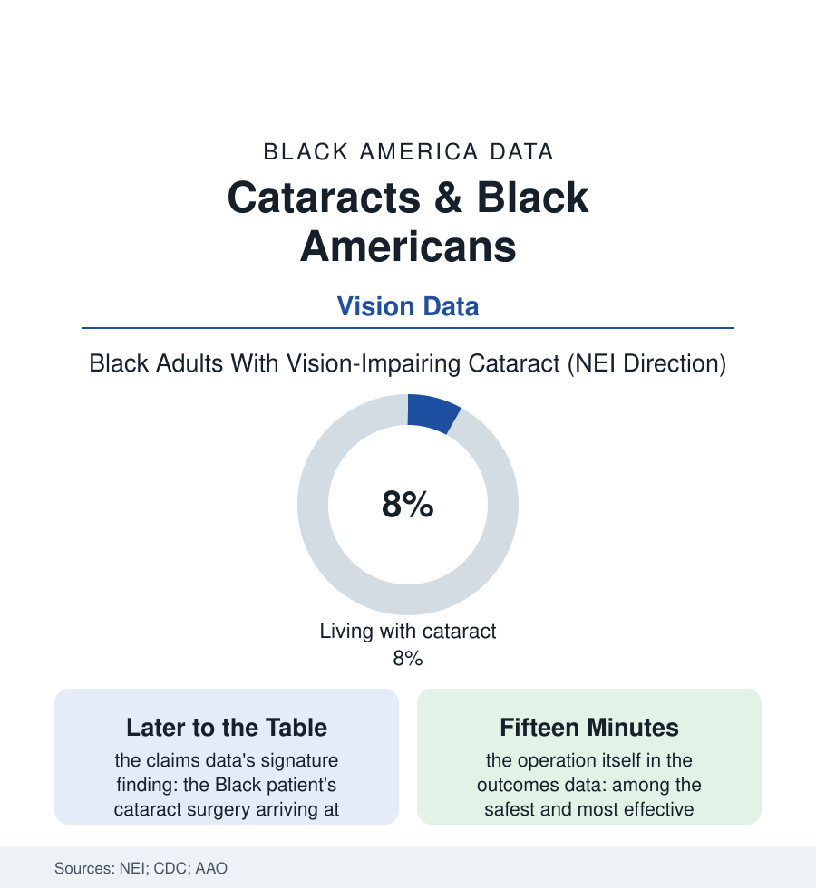

Black Public Health
The Clouded Lens: Cataracts and the Surgery Gap
Cataract is the world's leading cause of blindness and America's most curable — yet Black patients reach the operating room later, with worse vision, and lose sight to a fifteen-minute operation. The cataract file.

There is no blindness in this atlas more unnecessary than the cataract's: a clouded lens, a fifteen-minute outpatient operation, sight restored by morning — a cure so complete it reads as a parable. The claims data tell the parable's American version: the cure reaching Black patients later, at worse vision, with the preventable blindness accruing in the wait. This article reads the cataract file.
The Lens, the Wait, the Fall
The biology first, from the population eye studies (Salisbury's and Beaver Dam's cohorts and the NEI's syntheses): the cataract's cortical form running more prevalent in Black eyes, the nuclear form less — the net burden comparable in count and heavier in consequence, the vision-impairment rows of the CDC's surveillance placing cataract among the leading causes of Black vision loss in the senior years. The delay's anatomy is the section's standard chain at the eye clinic's door: the screening gap (the comprehensive eye exam's rates of the vision file — the cataract found when the glasses prescription stops working, found later when the exam itself is years overdue), the referral gauntlet (the primary-care handoff to the ophthalmologist whose map the specialty file draws in deserts), the surgical scheduling's own queues, and the patient's calculus the qualitative record documents without embarrassment — the eye surgery feared out of proportion to its safety record, the elder's generation carrying the era's legitimate surgical wariness, the family logistics of the drops-and-driver regimen the operation requires, each friction priced in months of thickening cloud. The interval is not free, and the file prices it in the claims' own currencies: the falls and hip fractures of the injury file clustering in the visually impaired years (the surgery's fracture-risk reduction measured in the Medicare studies like a drug's), the driving file's surrenders and the collisions that precede them, the depression file's vision-loss rows, the independence ledger of the senior file — the cataract's true cost schedule running, in the outcomes literature, through every other section of this book while the lens waits its turn.
The driver's license deserves its line in the file, because it is where the cataract stops being medical and becomes biographical: the renewal failed, the keys surrendered — in the car-dependent geography of most of this atlas, the surrender of the license is the surrender of the independent household itself. The surgery's truest outcome measure in the patient interviews is rarely the eye chart. It is the keys, handed back.
The Fix and Its Remaining Frictions
The correction's evidence is as close to cheerful as this section gets: where the access chain is built — the integrated systems' screening-to-surgery pipelines, the Medicare coverage that makes the standard operation genuinely near-universal after 65 — the surgery rates converge and the outcomes equalize, the file standing as one of the disparity literature's cleanest demonstrations that the gap is plumbing, not biology. The frictions that persist are the era's familiar denominations: the premium-lens upsell (the multifocal and astigmatism-correcting implants priced out of pocket in the thousands, the standard lens covered — a two-tier restoration of sight within the same operation, the vision file's version of the formulary's tiers), the second eye's scheduling lags in the claims data, the rural surgery map's thinning as the small hospitals of the health file shed their operating suites, and the post-operative follow-through (the drops' regimen, the follow-up visits) whose completion rows carry the transportation file's fingerprints. The screening frontier is the vision file's shared one: the fundus-and-lens photography of the primary-care camera programs, the AI grading pilots reading the cataract's density from the slit-lamp photo — the technology aiming, as in the diabetic-eye file, at the exam that never happens. The file closes with the parable inverted: in much of the world the cataract's backlog is a resource tragedy measured in millions of blind eyes; in this population it is a scheduling tragedy measured in months — the operating rooms exist, the surgeons exist, the coverage largely exists — and the cloud thickens anyway, one postponed referral at a time, in the most curable file in the book.
Reading the Cataract Data
The cataract file is the health section's parable with paperwork: sight, on offer, delayed by everything except medicine. The NEI publishes the prevalence; the claims publish the wait. The operation takes fifteen minutes. The file is about the years.
More in Black Public Health
Hypertension Among Black Adults: Prevalence, Control, and Consequences
About 55 percent of Black adults have hypertension — the highest rate of any U.S. group. Prevalence, onset, control, and the stroke, heart, and kidney consequences in the data.
Diabetes Among Black Adults: Prevalence and Complications
Nearly one in five Black adults has diabetes, diagnosed or undiagnosed — and its complications fall with particular weight. The CDC data on prevalence, control, and outcomes.
Black Life Expectancy: The Gap at Birth and Its Causes
Black life expectancy at birth is about 73 years, roughly five years below the national figure — the summary measure of every health gap in this section. The CDC data.
Source: National Eye Institute and CDC Vision Health data; Medicare claims research; American Academy of Ophthalmology; Beaver Dam and Salisbury eye studies.